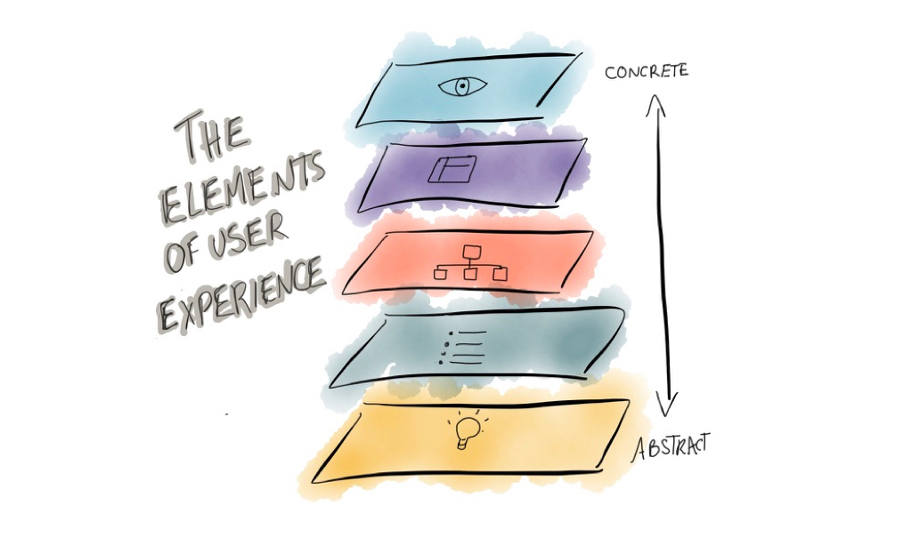
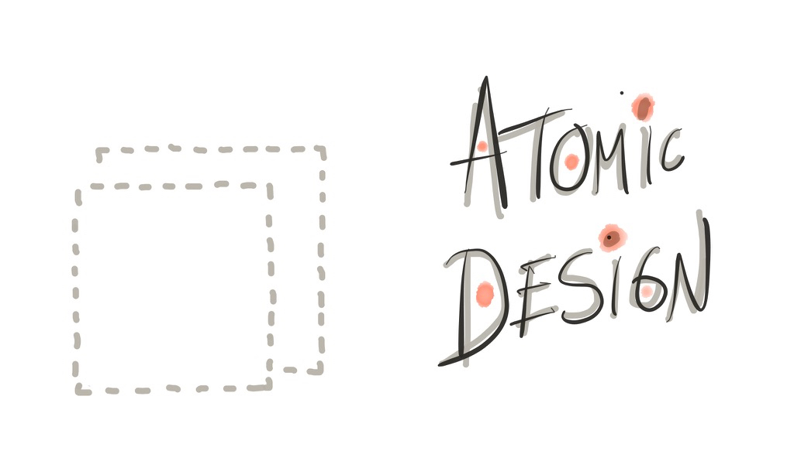
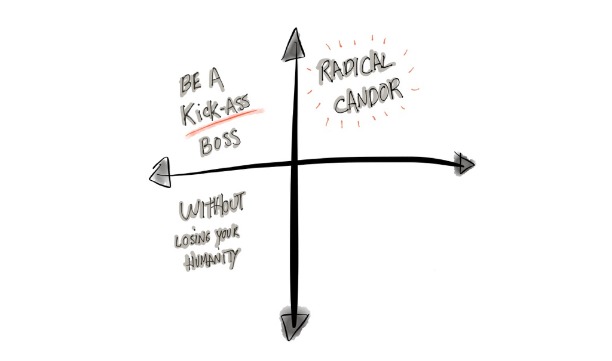
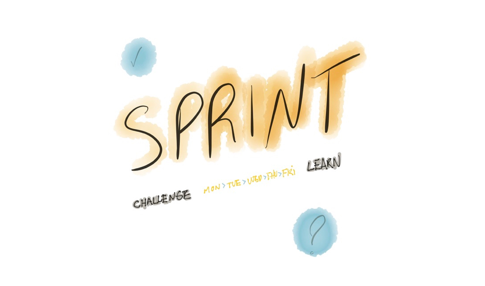

I am creating this list for myself (and for you of course) and because is a question I get often from people wanting to make the transition to UX Design. These are books that I have read and found useful. I have categorised them according to the moment you are in your career and the different roles and challenges you may face along the way.

Elements of User Experience by Jesse James GarretFundamentals
For anyone starting out, or simply haven’t read them, these are great books about the foundations of user experience as a discipline.
- The elements of user experience by Jesse James Garret
- The design of everyday things by Don Norman
- Don’t make me think by Steve Krug
- Information architecture (AKA the polar bear book) By Louis Rosenfeld, Peter Morville, and Jorge Arango

Atomic Design by Brad FrostIntermediate
A mix between process, practical and theoretical books that help in your everyday practice.
- Atomic Design by Brad Frost
- The UX team of one by Leah Buley
- Designing for emotion by Aaron Walter
- Design is a job by Mike Monteiro

Radical Candor by Kim ScottManagement
If you’ve chosen a management path, you probably found out that managing designers is not easy. These books will help you understand better what your role demands and be a better boss for your team.

Sprint by Jake KnappMethodologies
Some classic, some new(ish) methodologies to create and design digital products.
Feel free to recommend new books to add to this list, and this page will be alive and updated when I discover new books that I consider to be must reads.